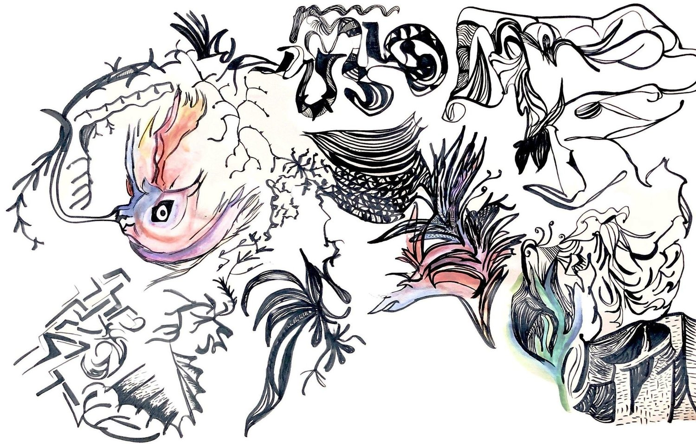
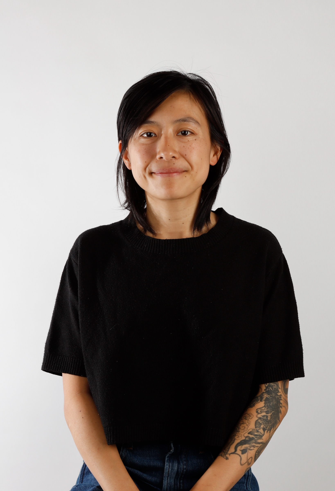
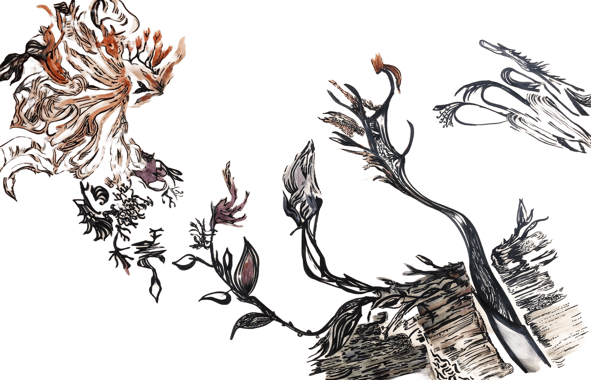

About



Caroline’s lifelong fascination with bacteria and fungi as foundation to all living systems has permeated all aspects of her work. Her practice embodies resourcefulness, adaptability, values instilled by her mother, who taught her to save, reuse, and repurpose whenever possible. Much like microbes who take in resources from what's around them, she works with what remains. She transforms waste into sites for interaction and exchange.
Her artistic inquiry is driven by interdisciplinary research, playful materials experimentation, and community engagement to reimagine relationships with and within the microbial world.
Using found items and bio-based materials, she juxtaposes the synthetic with the natural to create inviting sculptural paintings. Her projects engage with dynamic processes like geological timescales, ecological systems, and microbial communication. The explore questions like: what can microbes tell us about the past, present, and future? What do post-Anthropocene landscapes look like?
She transforms scientific concepts into whimsical experiences: using performance to re-envision microbes not just as disease-causing agents but as resource sharers who sing and dance and hosting peanut-eating competitions to gather source material that simultaneously informed the public on biomaterials. From the macro to the micro, she sees the shared principle of gathering to exchange and sustain life and culture. This recognition shapes her practice of community engagement as a vital, active part of her process.